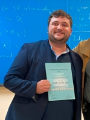

Curriculum Vitae & Biography
A complete printable PDF version of my Curriculum Vitae is available for download.
Short Biography
I am originally from Brazil, where I completed my undergraduate (B.Sc., 2015) and master's (M.Sc., 2018) studies in Mathematics at the University of Campinas (IMECC–UNICAMP). My undergraduate scientific initiation on Hodge theory was supervised by Henrique N. Sá Earp (funded by FAPESP), and my master's dissertation on the Calabi–Yau theorem via Kähler–Ricci flows was supervised by Rafael de Freitas Leão (funded by CNPq).
In 2018, I ranked 1st in the Ph.D. entrance exam at the Institute of Mathematics and Statistics of the University of São Paulo (IME–USP), where I completed my doctorate in December 2020 under the supervision of Llohann D. Sperança and co-supervision of Marcos M. Alexandrino (supported by FAPESP grant 2017/24680-1). My thesis, Deformações métricas e aplicações (Metric Deformations and Applications), was awarded both the 2021 CAPES Thesis Award and the 2021 Professor Carlos Teobaldo Gutiérrez Vidalon Thesis Prize for the best doctoral thesis in mathematics defended in Brazil in 2020.
From 2021 to 2022, I moved to Switzerland as a Postdoctoral Researcher at the University of Fribourg within the DFG/SNSF Priority Programme SPP 2026 Geometry at Infinity, hosted by Anand Dessai. In 2022, I returned to IMECC–UNICAMP as a CAPES and FAPESP Postdoctoral Fellow (grant 2022/09603-9) working with Lino Grama. During 2024–2025, supported by a FAPESP–BEPE fellowship (2023/14316-1) and IMSA, I was a Postdoctoral Researcher at the University of Miami / Institute of the Mathematical Sciences of the Americas (IMSA) working with Ludmil Katzarkov and collaborating with Maxim Kontsevich (IHÉS) on the Theory of Atoms and $G$-equivariant birational geometry.
In July 2025, I joined the International Center for Mathematical Sciences – Sofia (ICMS-Sofia) at the Institute of Mathematics and Informatics of the Bulgarian Academy of Sciences (IMI-BAS) full-time as an Established Researcher (R3) in the Theory of Atoms research group, where I also lead the GEOATOMS computational and AI infrastructure.

Academic Appointments
2022/09603-9 Oct 2022–July 2025).Education
Advisor: Prof. Llohann Dallagnol Sperança · Co-advisor: Prof. Marcos Martins Alexandrino da Silva.
Committee: Llohann D. Sperança, Renato G. Bettiol (CUNY), Marco Radeschi (Notre Dame), Mateus M. de Melo, Francisco C. Caramello Jr.
Advisor: Prof. Rafael de Freitas Leão.
Advisor: Prof. Henrique Nogueira de Sá Earp.
Prizes, Honors & Distinctions
• 1st place (score 10/10) in CAPES Postdoctoral Selection at the Federal University of Paraíba (UFPB) (2020).
• 1st place in Ph.D. Entrance Exam at IME–USP (2018).
Research Grants, Fellowships & Major Proposals
ATOMS), hosted at IMI-BAS, Sofia.• Core Senior Researcher (leading WP3 Equivariant & Symplectic Atoms and WP6 Computational & AI Infrastructure / GEOATOMS) in the 84-month ERC Plus 2026 proposal "The Geometry of Atoms" (
GEOATOM, PI: Ludmil Katzarkov) at IMI-BAS / ICMS-Sofia.
2023/14316-1
2022/09603-9 (and CAPES Postdoctoral Fellowship, Feb–Sept 2022)
2017/24680-1
2014/06913-0)
Languages
Portuguese (native), English (fluent), French (advanced), and Spanish (advanced).